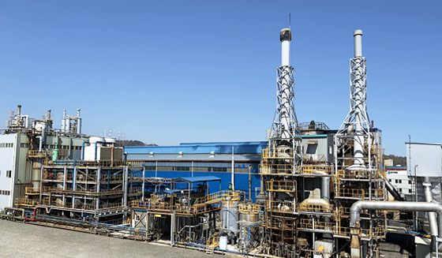

GS그룹 계열 정유사. 본사는 서울특별시 강남구 논현로 508, 27층 (역삼동, GS타워)에 위치해 있다.
전라남도 여수시에 정유공장과 인천광역시에 윤활유 공장이 있는데 둘 다 크고 아름답다. 대한민국 4대 정유사 중에서 (S-OIL, SK에너지, GS칼텍스, 현대오일뱅크) SK에너지 다음가는 위치라 그런지도 모르겠다. GS&POINT[1] 운영회사이기도 한다.
1967년 정부가 제2정유공장 설립을 계획함에 따라 락희화학이 한국화약 등 여러 경쟁사들을 제치고 미국 쉐브론 자회사 칼텍스와 합작해[5] 호남정유[6]를 세웠다. 창립 시부터 락희와 칼텍스가 공동경영하며 줄곧 대표이사를 1명씩 선임했다.
1968년 석유제품 판매를 개시하고 1969년 여수공장 및 인천 윤활유공장을 세웠다. 1970~1981년까지 네 차례 여수공장을 확장하며 1970년에 첫 자회사 럭키유전개발(주)를 세우고 세방석유를 인수했다. 뒤이어 1971년 대한유조선, 1972년 호남탱카, 1985년 여수에너지를 각각 설립/인수했고, 1986년 기술연구소 개설 후 합작투자계획을 수정해 럭키금성 측이 단독경영을 맡았다. 1988년 폴리프로필렌 사업을 개시하고 미국 현지법인을 세웠으며, 삼양사, 일본 미쓰비시화학과 합작해 삼남석유화학도 세웠다.
1994년 대일석유 등 7개 석유판매업체들을 인수합병시켜 호유판매를 출범시켜 판매망을 통일했고, 1995년 카센터 체인 '오토 오아시스'를 런칭한 뒤 1996년 5월 20일에 LG칼텍스정유로 사명을 변경했으며 주유소 편의점 체인 'LG스타'도 런칭했다. 1997년 극동도시가스를 인수했고, 인터넷 홈페이지도 열었다. 1998년 LG정유판매, 1999년 호유해운을 각각 합병했다. 2004년 신규법인 GS홀딩스 산하로 편입된 후 2005년 LG그룹에서 GS그룹이 계열 분리되어 GS그룹으로 넘어갔다. 2008년 JoyMart 및 오토 오아시스 사업권을 GS엠비즈에 넘기고 2011년까지 GS가 50%, 쉐브론이 40% + 10%(쉐브론 본사 40% + 쉐브론글로벌에너지 10%)로 출자해서 경영권을 GS가 가지고 있었으나, 2012년 1월부로 GS가 자회사 GS에너지를 설립하면서 GS 지분 50%를 GS에너지로 넘겼다.
2019년부터 여수공장에 일종의 증축공사로 새로운 공장을 짓고 있다. MFC(Mixed Feed Craker), 즉 올레핀 생산공정으로 구조나 원리는 ncc(나프타 분해 설비)와 비슷하지만 차이점은 원료에 있다. 기본적으로 나프타만 크래킹할 수 있는 ncc와 다르게 부생가스(Off-Gas), 나프타, LPG 등을 섞어서 원료로 사용할 수 있는 시설이다. 2021년 가동을 목표로 하고있다.
본사 : 서울특별시 강남구 논현로 508, 27층 (역삼동, GS타워)
GS에코메탈 : 45009 울산광역시 울주군 온산읍 화산1길 75-34
